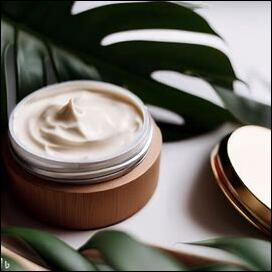
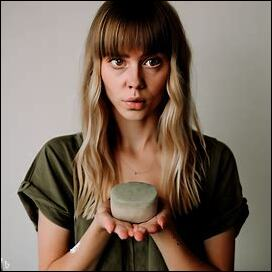
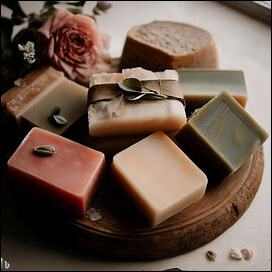

Nuestros productos

Crema hidratante
Las cremas hidratantes están hechas con ingredientes naturales y veganos para cuidar tu piel de manera saludable.
Ver mas

Ver mas
Shampoo sólido
Nuestro shampoo sólido es una alternativa ecológica y saludable para el cuidado de tu cabello.
Ver mas

Jabón artesanal
Los jabones artesanales están hechos con ingredientes naturales y veganos para cuidar tu piel de manera sustentable.
Ver masNosotros
Somos una empresa dedicada a la fabricación de cosmética natural y vegana. Nuestros productos están hechos con ingredientes de alta calidad y respetuosos con el medio ambiente.
Conoce más